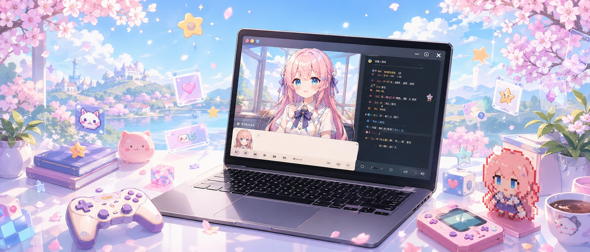
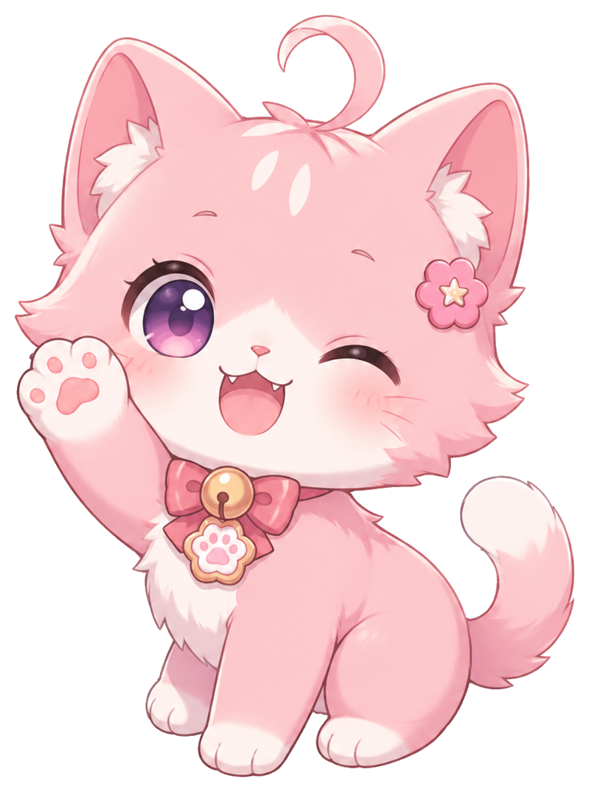
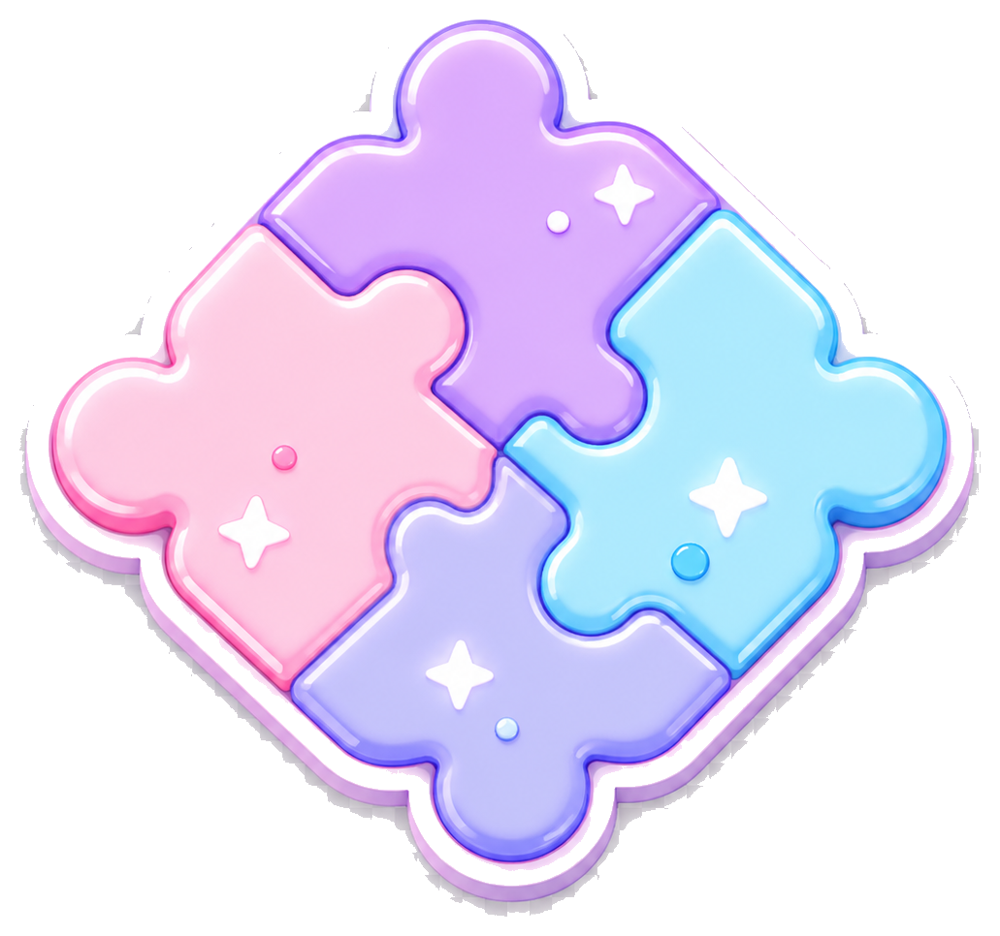
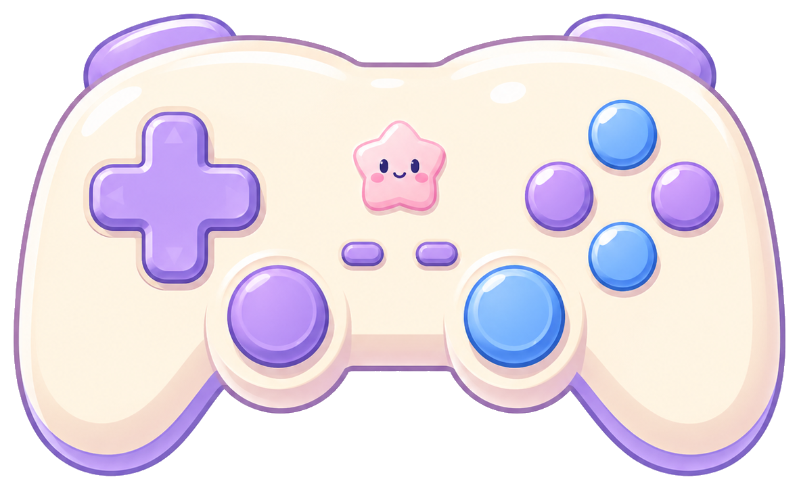
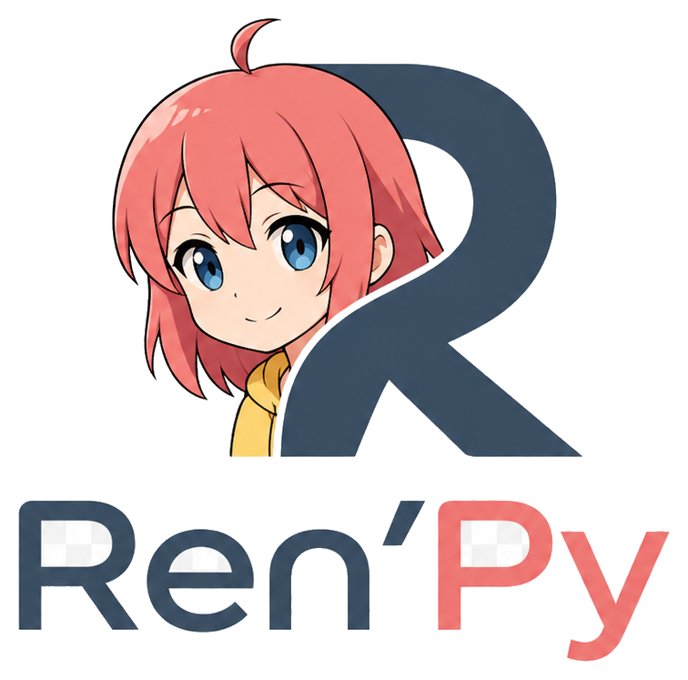
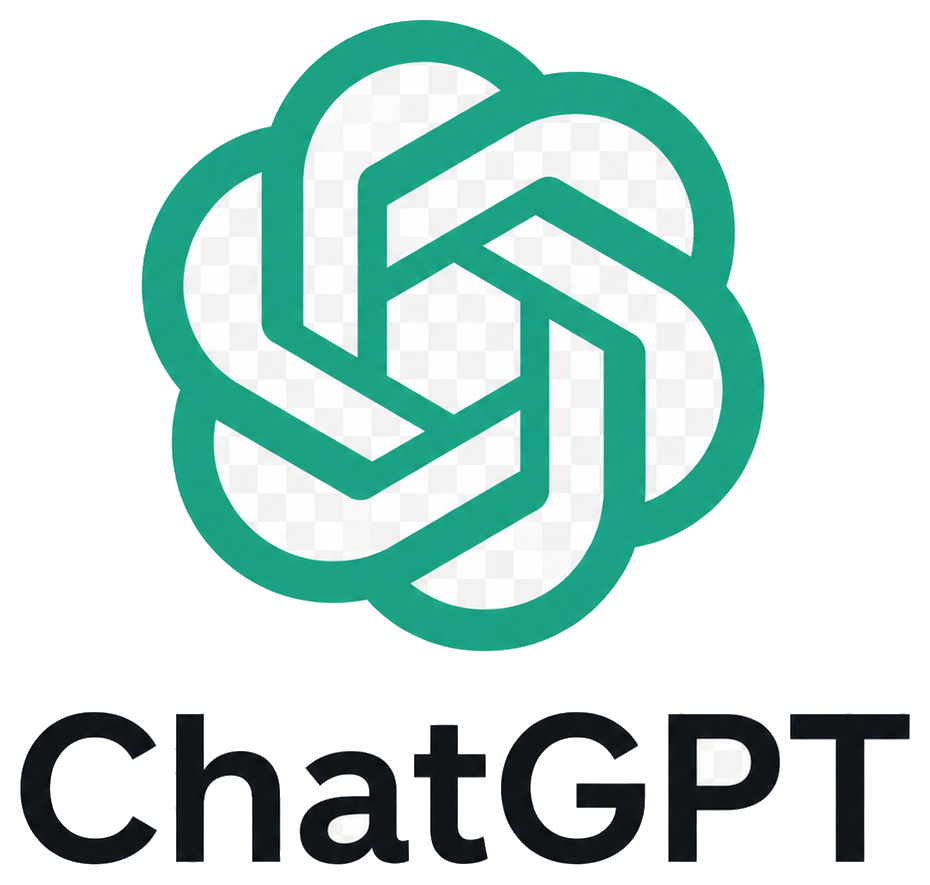
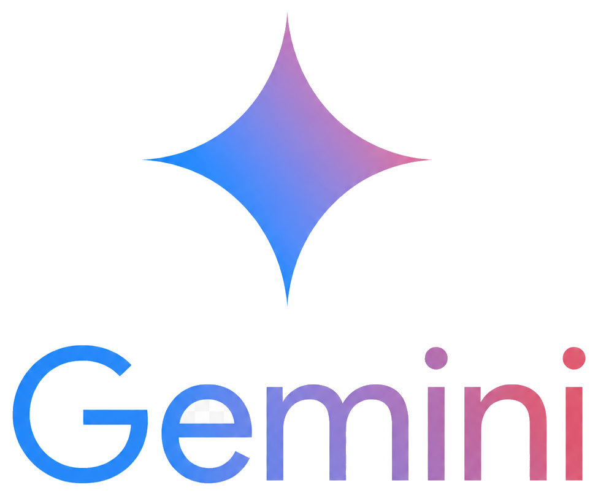
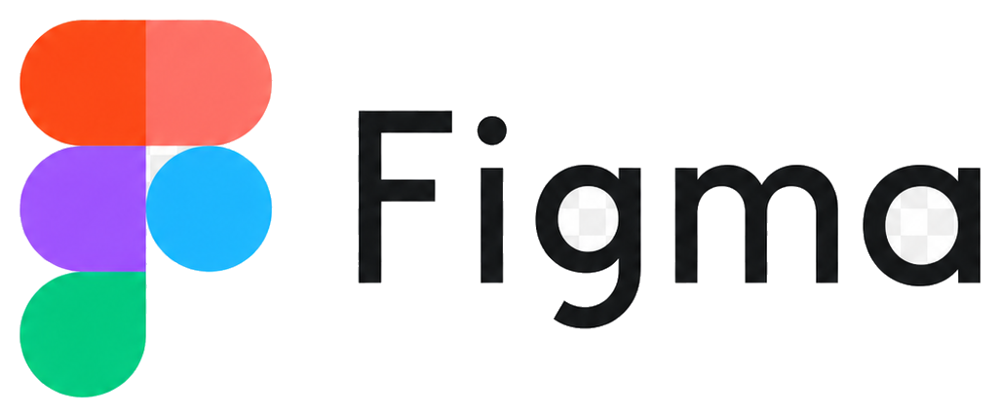
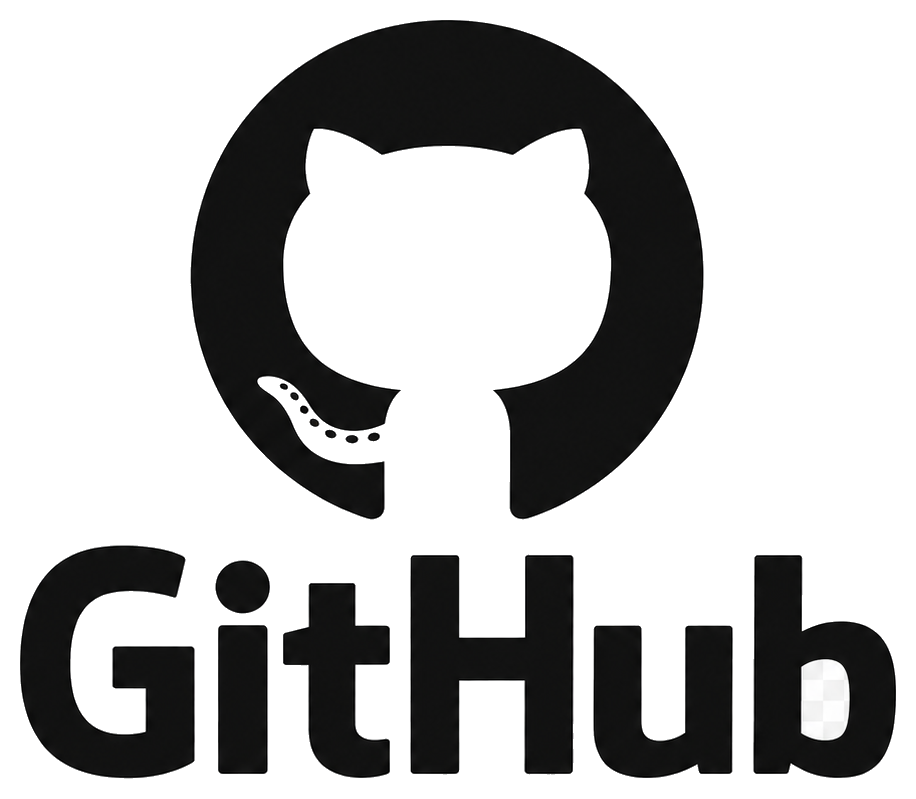
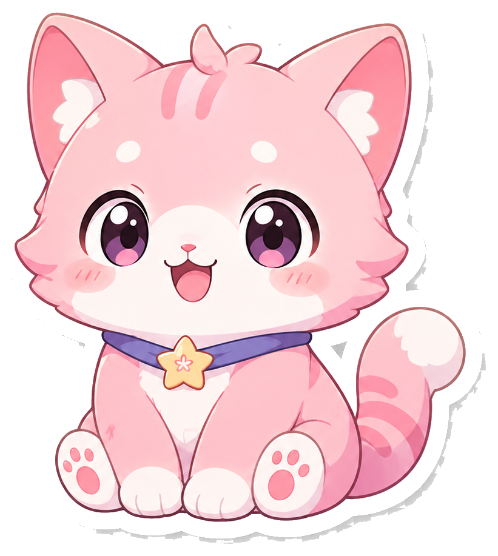

零基础友好
从安装、文件夹、命名规范开始，不默认你懂代码。
AI 辅助视觉小说制作实战课
从故事设定、角色对白、图片音乐导入，到分支剧情、多结局、报错修复和打包发布，这条路线会带你完整走完一个可复用的创作流程。


从安装、文件夹、命名规范开始，不默认你懂代码。
故事、素材、分支、测试、打包一次走通。

脚本、提示词、Bug 表和素材表可以直接套用。
把图片、缩进、跳转、打包等高频坑提前标出来。
Roadmap
先跑通主线，再逐步加入素材、变量、声音和发布流程。每一步都只解决一个明确问题。

工具准备安装与环境Toolbox
网页按照“必装、AI、素材处理、发布”的顺序组织，新手可以先完成最小工具集。

创建、运行、打包视觉小说项目。
必装打开下载页编辑 .rpy 文件并查看项目结构。
必装打开下载页
课程规划、代码解释、错误分析。
AI打开网页长文本剧情、角色关系和分支梳理。
AI打开网页
多模态理解、图片描述和资料整理。
AI打开网页批量改代码、重构脚本、协助排错。
编程打开官网
处理封面、按钮、UI 和视觉规范。
美术
项目备份、版本管理和网页部署。
进阶打开网页发布独立游戏 Demo 和收集反馈。
发布打开网页AI Workflow
不要一次让 AI 写完整大项目。更稳的方式是：先让它帮你拆小任务，每生成一个功能就复制进 Ren'Py 测试一次。
From Folder To Demo
my_visual_novel/
├─ game/
│ ├─ script.rpy
│ ├─ images/
│ │ ├─ bg/
│ │ └─ characters/
│ └─ audio/
└─ README.mdimages/bg/images/characters/Lessons
每章都包含目标、操作步骤、示例代码、常见错误、AI 提示词和完成检查。
Copy Ready
define a = Character("艾拉", color="#c8ffc8")
define p = Character("我", color="#c8c8ff")
default trust = 0
label start:
scene bg room_day
with fade
play music "audio/bgm/daily_loop.ogg" fadein 1.0
"这是我来到这座城市的第一天。"
show a normal at center
a "你终于来了。"
p "你认识我？"
a "也许吧。现在你必须做一个选择。"
menu:
"你要怎么回答？"
"相信她":
$ trust += 1
p "好，我相信你。"
jump main_trust
"保持怀疑":
p "我还不能相信你。"
jump main_doubt
label main_trust:
a "谢谢你。那我们走吧。"
jump final_check
label main_doubt:
a "谨慎也许是对的。"
jump final_check
label final_check:
if trust >= 1:
jump good_end
else:
jump normal_end
label good_end:
scene bg sunset
with fade
a "因为你相信了我，所以我们都得救了。"
stop music fadeout 1.0
"好结局。"
return
label normal_end:
scene bg night
with fade
a "也许下一次，你会做出不同的选择。"
stop music fadeout 1.0
"普通结局。"
returnAsset Rules
新手最容易卡在“图片不显示”。先固定路径、文件名和类型，后面排错会轻松很多。
背景图game/images/bg/bg_classroom_day.png
角色立绘game/images/characters/ella_smile.png
BGMgame/audio/bgm/daily_loop.ogg
音效game/audio/sfx/door_open.ogg
Case Study
一个 5-8 分钟的治愈悬疑 Demo：玩家作为转学生，在艾拉的引导下寻找一封被藏起的信。两次选择决定真结局、普通结局或坏结局。
如果你愿意相信我，黄昏前我们还有一次机会。
FAQ
检查文件夹、图片名、路径分隔符、大小写和扩展名。第一版建议统一英文小写和下划线。
确认每个 jump good_end 都有对应的 label good_end:，并检查拼写和缩进。
素材文件名优先使用英文；字体需要放进项目并在配置中指定支持中文的字体。
检查格式、路径、音量设置和文件名大小写。BGM 建议使用可循环的 ogg 文件。
先画分支图，再逐个检查变量增加的位置。可以临时加入旁白输出当前变量值。
确保所有资源都在 game 文件夹内，不引用本机绝对路径，打包后解压本地复测。
Before Build
Templates
已经按计划书做成可下载文件，适合直接放进你的 Ren'Py 项目资料夹。
